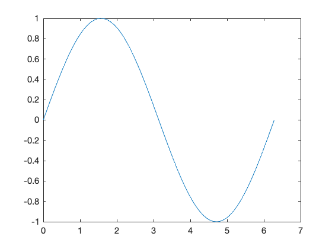
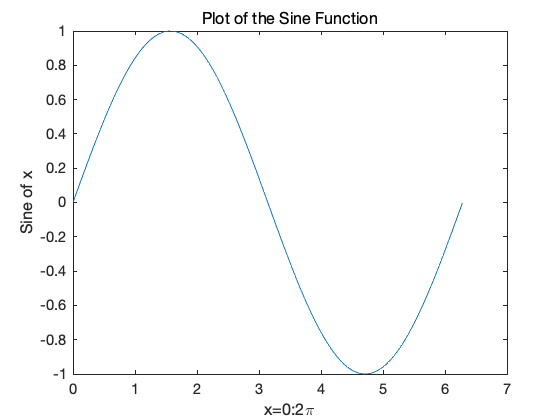
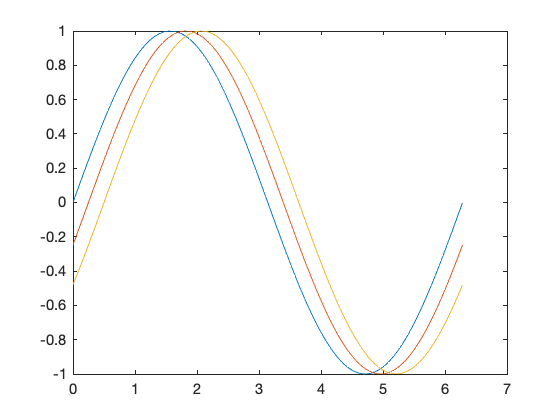
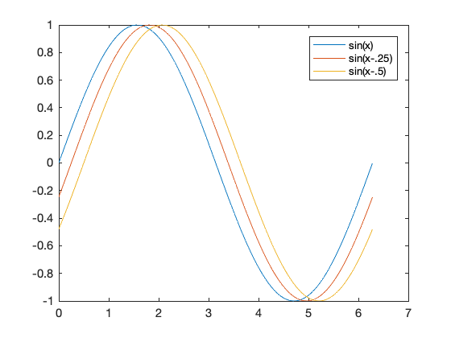
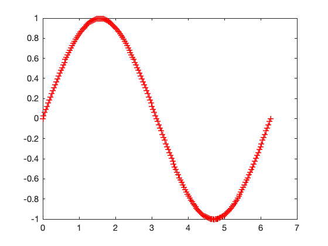

图形¶
基本绘图函数¶
创建二维线图¶
绘图函数具有不同的形式，具体取决于输入参数。
如果y是一个向量，则plot(y)语句将绘制出以y中元素的下标为横坐标、元素值为纵坐标、各点以线段相连的线条。
如果x和y都是向量，则它们的长度必须相同，plot(x,y)语句将绘制出以x中元素值为横坐标、y中元素值为纵坐标、各点以线段相连的线条。
使用冒号运算符创建值在 0 到2Π间的向量x ,计算这些值的正弦值,并绘制结果。
[4]:
x=0:pi/100:2*pi;
y=sin(x);
plot(x,y)

添加坐标轴标注和标题。函数xlabel中的字符**:nbsphinx-math:pi**创建符号Π，title函数中的FontSize属性可调整标题文本的字号。
[6]:
x=0:pi/100:2*pi;
y=sin(x);
plot(x,y)
xlabel('x=0:2\pi')
ylabel('Sine of x')
title('Plot of the Sine Function','FontSize',12)

在一个图形中绘制多条曲线¶
通过调用一次plot函数，MATLAB根据多对x-y数据绘制出多条颜色不同的曲线。
例如，这些语句绘制出三个与x相关的函数：
[8]:
x=0:pi/100:2*pi;
y=sin(x);
y2=sin(x-.25);
y3=sin(x-.5);
plot(x,y,x,y2,x,y3)

函数legend提供了一种简便易行的方法来标注各条曲线：
[10]:
x=0:pi/100:2*pi;
y=sin(x);
y2=sin(x-.25);
y3=sin(x-.5);
plot(x,y,x,y2,x,y3)
legend('sin(x)','sin(x-.25)','sin(x-.5)')

指定线条样式和颜色¶
使用plot命令绘制数据时,可以指定线条颜色、样式和添加标记(如加号或圆圈)：
plot(x,y,'color_style_marker')
color_style_marker包含一到四个字符(通过单引号隔开),由颜色、线条样式和标记类型构成。例如,
[12]:
plot(x,y,'r:+')

使用红线绘制数据,并在每个数据点放置符号“+” 标记。
color_style_marker由以下部分组成。
类型 |
符号 |
说明 |
|---|---|---|
颜色 |
‘c’‘m’‘y’‘r’‘g’‘b’‘w’‘k’ |
青蓝色品红色黄色红色绿色蓝色白色黑色 |
线型 |
‘-’’–’‘:’‘-.’‘no character’ |
实线虚线点线点画线无 |
标记 |
’+‘**’o’**’*‘**’x’**’s’**’d’**’^‘**’v’**’>‘**’<‘**’p’**‘h’****no character** |
加号圆圈星号叉号方形菱形上三角下三角右三角左三角五角形六角形无 |
[ ]: